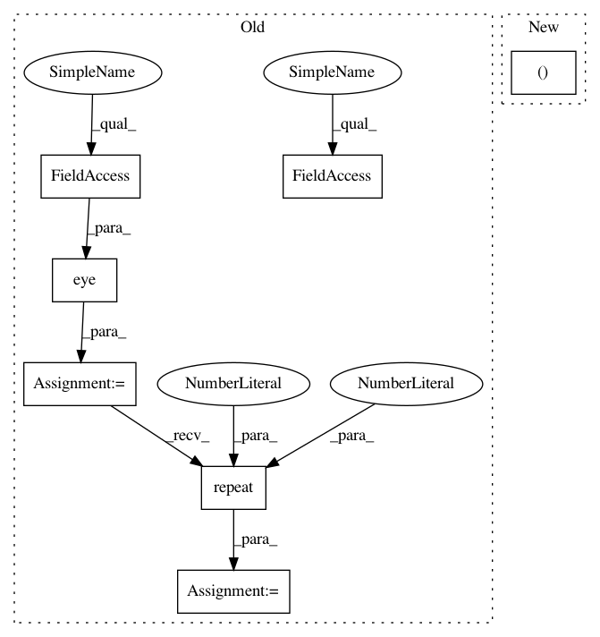

aaf2dd66651d04bb8a615ec288155aa28d064abb,gpytorch/kernels/index_kernel.py,IndexKernel,_eval_covar_matrix,#IndexKernel#,70
Before Change
def _eval_covar_matrix(self):
var = self.var
eye = torch.eye(var.shape[-1], dtype=var.dtype, device=var.device)
if len(self.batch_shape) > 0:
eye = eye.view((1, var.shape[-1], var.shape[-1])).repeat(*self.batch_shape, 1, 1)
D = var.repeat(1, var.shape[-1]).view(*self.batch_shape, var.shape[-1], var.shape[-1]) * eye
else:
D = var * eye
return self.covar_factor.matmul(self.covar_factor.transpose(-1, -2)) + D
After Change
self.initialize(raw_var=self.raw_var_constraint.inverse_transform(value))
def _eval_covar_matrix(self):
self._C[..., self.tidcs[0], self.tidcs[1]] = self.covar_factor
return self._C @ self._C.transpose(-1, -2) + torch.diag_embed(self.var)
@property
In pattern: SUPERPATTERN
Frequency: 3
Non-data size: 7
Instances
Project Name: cornellius-gp/gpytorch
Commit Name: aaf2dd66651d04bb8a615ec288155aa28d064abb
Time: 2019-10-24
Author: darbour26@gmail.com
File Name: gpytorch/kernels/index_kernel.py
Class Name: IndexKernel
Method Name: _eval_covar_matrix
Project Name: cornellius-gp/gpytorch
Commit Name: aaf2dd66651d04bb8a615ec288155aa28d064abb
Time: 2019-10-24
Author: darbour26@gmail.com
File Name: gpytorch/kernels/index_kernel.py
Class Name: IndexKernel
Method Name: _eval_covar_matrix
Project Name: osmr/imgclsmob
Commit Name: 7c3d0a5ea7405fe74cc31f5553f7c04d9804d42e
Time: 2019-03-02
Author: osemery@gmail.com
File Name: pytorch/pytorchcv/models/isqrtcovresnet.py
Class Name: Covpool
Method Name: forward
Project Name: arraiy/torchgeometry
Commit Name: 38127f47b9aae69f1ac7fb5644c56e61aaeb1c89
Time: 2019-01-11
Author: kaplanonu@gmail.com
File Name: torchgeometry/imgwarp.py
Class Name:
Method Name: warp_affine